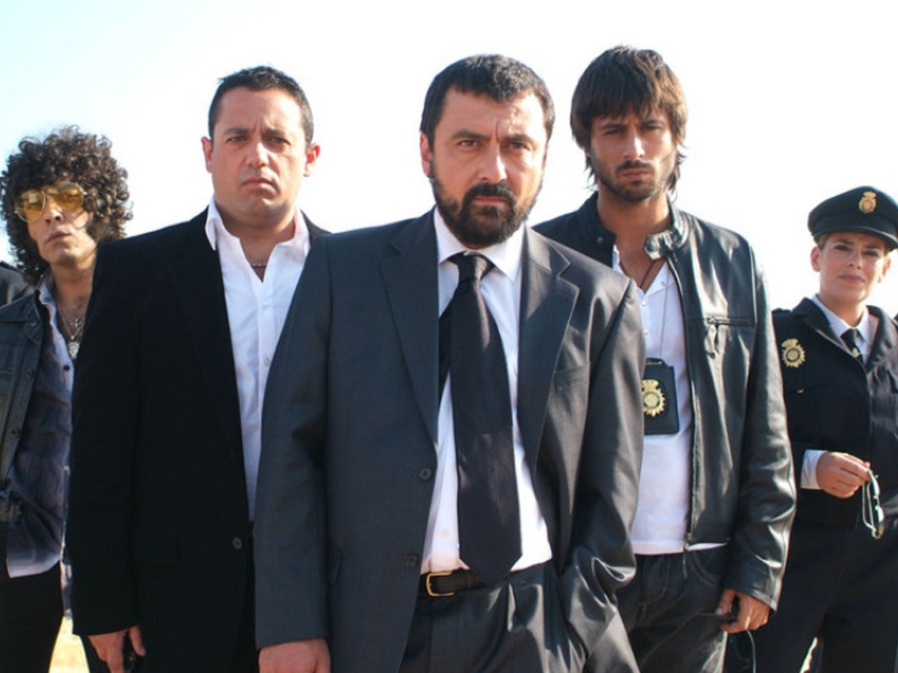

<!doctype html>
<html lang="es">
  <head>
    <meta charset="UTF-8" />
    <link rel="icon" href="data:image/svg+xml,<svg xmlns='http://www.w3.org/2000/svg' viewBox='0 0 100 100'><text y='.9em' font-size='90'>📁</text></svg>" />
    <meta name="viewport" content="width=device-width, initial-scale=1.0, viewport-fit=cover" />
    <meta name="theme-color" content="#1e1815" />
    <title>Expediente #404-SA · Operación Tortilla Quemada | Comisaría de San Antonio</title>
    <link rel="preconnect" href="https://fonts.googleapis.com" />
    <link rel="preconnect" href="https://fonts.gstatic.com" crossorigin />
    <link href="https://fonts.googleapis.com/css2?family=Caveat:wght@600;700&family=Courier+Prime:ital,wght@0,400;0,700;1,400&family=Permanent+Marker&family=Special+Elite&display=swap" rel="stylesheet" />
    <style>
      :root {
        --wood-dark: #1e1815;
        --wood-mid: #2c221d;
        --manila-light: #e8dcb8;
        --manila-base: #dfcfa6;
        --manila-dark: #d7c49e;
        --manila-tab-inactive: #c7b287;
        --paper-cream: #f6f0de;
        --paper-aged: #efe5c8;
        --ink-dark: #1f1b18;
        --ink-muted: #52473c;
        --stamp-red: #a82020;
        --stamp-green: #1e6b38;
        --postit-yellow: #f9e87c;
        --font-typewriter: 'Courier Prime', 'Courier New', monospace;
        --font-title: 'Special Elite', 'Courier Prime', monospace;
        --font-hand: 'Caveat', cursive;
        --font-marker: 'Permanent Marker', cursive;
      }

      * {
        box-sizing: border-box;
      }

      html,
      body {
        margin: 0;
        padding: 0;
        min-height: 100vh;
        background-color: var(--wood-dark);
        background-image:
          radial-gradient(circle at 20% 20%, rgba(75, 53, 38, 0.35) 0%, transparent 55%),
          radial-gradient(circle at 80% 75%, rgba(60, 42, 30, 0.4) 0%, transparent 60%),
          repeating-linear-gradient(
            90deg,
            rgba(255, 255, 255, 0.012) 0px,
            rgba(255, 255, 255, 0.012) 2px,
            transparent 2px,
            transparent 9px
          );
        color: var(--ink-dark);
        font-family: var(--font-typewriter);
        -webkit-font-smoothing: antialiased;
      }

      button,
      select,
      textarea {
        font-family: inherit;
      }

      .desk-environment {
        position: relative;
        max-width: 1380px;
        margin: 0 auto;
        padding: 18px 20px 48px;
        overflow-x: hidden;
      }

      .coffee-stain {
        position: fixed;
        width: 170px;
        height: 170px;
        border-radius: 50%;
        border: 9px solid rgba(92, 54, 24, 0.14);
        box-shadow:
          inset 0 0 12px rgba(92, 54, 24, 0.12),
          0 0 6px rgba(92, 54, 24, 0.08);
        pointer-events: none;
        z-index: 0;
      }

      .coffee-stain-top {
        top: 72px;
        right: 45px;
        transform: rotate(18deg) scale(1.05, 0.96);
      }

      .coffee-stain-bottom {
        bottom: 35px;
        left: 30px;
        transform: rotate(-25deg) scale(0.92, 1.04);
      }

      .top-bar {
        position: relative;
        z-index: 2;
        display: flex;
        flex-wrap: wrap;
        justify-content: space-between;
        align-items: center;
        gap: 14px;
        background: rgba(20, 15, 12, 0.88);
        border: 1px solid rgba(215, 196, 158, 0.28);
        border-radius: 6px;
        padding: 12px 18px;
        margin-bottom: 18px;
        color: var(--manila-light);
        box-shadow: 0 8px 24px rgba(0, 0, 0, 0.45);
      }

      .top-bar-left {
        display: flex;
        align-items: center;
        gap: 14px;
      }

      .cnp-badge {
        background: linear-gradient(135deg, #d4af37, #997a15);
        color: #16120e;
        font-family: var(--font-title);
        font-weight: 700;
        font-size: 0.78rem;
        letter-spacing: 0.06em;
        padding: 6px 10px;
        border-radius: 4px;
        border: 1px solid #f7e18b;
        white-space: nowrap;
      }

      .case-main-title {
        margin: 0;
        font-family: var(--font-title);
        font-size: 1.2rem;
        letter-spacing: 0.03em;
        color: #f5ebd1;
      }

      .case-subtitle {
        margin: 2px 0 0;
        font-size: 0.8rem;
        color: #bda982;
      }

      .top-bar-right {
        display: flex;
        flex-wrap: wrap;
        align-items: center;
        gap: 10px;
      }

      .progress-pill {
        display: flex;
        align-items: center;
        gap: 6px;
        background: rgba(232, 220, 184, 0.1);
        border: 1px solid rgba(232, 220, 184, 0.25);
        padding: 6px 11px;
        border-radius: 4px;
        font-size: 0.82rem;
        color: #e8dcb8;
      }

      .progress-pill strong {
        color: #f9e87c;
      }

      .toast-banner {
        position: fixed;
        bottom: 22px;
        right: 22px;
        z-index: 60;
        background: #231c16;
        color: #f9e87c;
        border: 2px solid #d4af37;
        padding: 10px 16px;
        border-radius: 4px;
        box-shadow: 0 10px 24px rgba(0, 0, 0, 0.55);
        font-size: 0.9rem;
        font-weight: 700;
        display: none;
      }

      .workspace-grid {
        position: relative;
        z-index: 2;
        display: grid;
        grid-template-columns: 1fr 310px;
        gap: 20px;
        align-items: start;
      }

      .folder-tabs {
        display: flex;
        flex-wrap: wrap;
        gap: 6px;
        padding-left: 10px;
        margin-bottom: -2px;
        position: relative;
        z-index: 3;
      }

      .folder-tab {
        display: inline-flex;
        align-items: center;
        gap: 7px;
        padding: 10px 16px 9px;
        background: var(--manila-tab-inactive);
        color: #3d3226;
        border: 1px solid #9e8860;
        border-bottom: none;
        border-radius: 10px 14px 0 0;
        font-family: var(--font-title);
        font-size: 0.88rem;
        cursor: pointer;
        transition: transform 0.14s ease, background-color 0.14s ease;
        box-shadow: inset 0 2px 4px rgba(255, 255, 255, 0.25);
      }

      .folder-tab:hover {
        background: #dac79c;
        transform: translateY(-2px);
      }

      .folder-tab.active {
        background: var(--manila-light);
        color: #16120e;
        font-weight: 700;
        transform: translateY(-3px);
        border-color: #b59e72;
        box-shadow: 0 -3px 8px rgba(0, 0, 0, 0.18);
      }

      .folder-tab.tab-accuse {
        background: #b58d76;
        color: #2b110e;
      }

      .folder-tab.tab-accuse.active {
        background: var(--manila-light);
        color: var(--stamp-red);
      }

      .tab-num {
        display: inline-block;
        background: rgba(0, 0, 0, 0.12);
        padding: 2px 6px;
        border-radius: 3px;
        font-size: 0.75rem;
      }

      .manila-folder-sheet {
        position: relative;
        background: linear-gradient(165deg, var(--manila-light) 0%, var(--manila-base) 55%, var(--manila-dark) 100%);
        border: 1px solid #b59e72;
        border-radius: 4px 10px 8px 8px;
        padding: 28px 28px 34px;
        box-shadow:
          inset 0 0 40px rgba(0, 0, 0, 0.18),
          0 18px 42px rgba(0, 0, 0, 0.55);
        min-height: 640px;
      }

      .paperclip-top {
        position: absolute;
        top: -12px;
        right: 190px;
        width: 24px;
        height: 52px;
        border: 3px solid #7c858e;
        border-radius: 12px;
        box-shadow: 1px 2px 3px rgba(0, 0, 0, 0.25);
        pointer-events: none;
      }

      .stamp-secret {
        position: absolute;
        top: 18px;
        right: 26px;
        border: 3px double var(--stamp-red);
        color: var(--stamp-red);
        padding: 4px 12px;
        font-family: var(--font-title);
        font-weight: 700;
        font-size: 0.92rem;
        letter-spacing: 0.08em;
        text-align: center;
        transform: rotate(-4deg);
        mix-blend-mode: multiply;
        opacity: 0.85;
        pointer-events: none;
        line-height: 1.15;
      }

      .stamp-secret span {
        display: block;
        font-size: 0.62rem;
        letter-spacing: 0.12em;
      }

      .document-header {
        border-bottom: 2px solid rgba(45, 35, 25, 0.35);
        padding-bottom: 14px;
        margin-bottom: 20px;
        padding-right: 175px;
      }

      .doc-kicker {
        margin: 0 0 4px;
        font-size: 0.76rem;
        letter-spacing: 0.08em;
        color: var(--ink-muted);
        font-weight: 700;
      }

      .doc-title {
        margin: 0;
        font-family: var(--font-title);
        font-size: 1.4rem;
        color: var(--ink-dark);
      }

      .doc-helper {
        margin: 8px 0 0;
        font-size: 0.9rem;
        color: #3f352c;
      }

      .doc-meta-box {
        margin-top: 10px;
        display: flex;
        flex-wrap: wrap;
        gap: 18px;
        font-size: 0.82rem;
        background: rgba(255, 255, 255, 0.35);
        padding: 8px 12px;
        border-left: 3px solid #5c4b3b;
      }

      .summary-layout {
        display: grid;
        grid-template-columns: 1fr 300px;
        gap: 22px;
        align-items: start;
      }

      .typewriter-paper {
        background: var(--paper-cream);
        border: 1px solid #c9ba9b;
        padding: 22px 24px;
        box-shadow:
          inset 0 0 24px rgba(138, 117, 83, 0.15),
          2px 4px 12px rgba(0, 0, 0, 0.12);
      }

      .section-heading {
        font-family: var(--font-title);
        font-size: 1rem;
        margin: 18px 0 10px;
        padding-bottom: 4px;
        border-bottom: 1px dashed #8c7b65;
        color: #2b2118;
      }

      .section-heading:first-child {
        margin-top: 0;
      }

      .typewriter-paragraph {
        line-height: 1.65;
        font-size: 0.95rem;
        margin: 0 0 16px;
      }

      .safe-items-grid {
        display: grid;
        gap: 10px;
        margin-bottom: 16px;
      }

      .safe-item-card {
        display: flex;
        align-items: flex-start;
        gap: 12px;
        background: var(--paper-aged);
        border: 1px solid #cbb994;
        padding: 10px 12px;
        border-radius: 4px;
      }

      .safe-item-icon {
        font-size: 1.55rem;
        line-height: 1;
      }

      .safe-item-card strong {
        display: block;
        font-size: 0.9rem;
        margin-bottom: 2px;
      }

      .safe-item-card p {
        margin: 0;
        font-size: 0.84rem;
        color: #3f352c;
      }

      .directive-list {
        margin: 0 0 18px;
        padding-left: 20px;
        line-height: 1.6;
        font-size: 0.92rem;
      }

      .directive-list li {
        margin-bottom: 6px;
      }

      .quick-actions-row {
        display: flex;
        flex-wrap: wrap;
        gap: 10px;
        margin-top: 14px;
      }

      .yellow-postit {
        position: relative;
        background: linear-gradient(155deg, #fff394 0%, #f3dc58 100%);
        padding: 18px 18px 16px;
        border: 1px solid #d8be37;
        box-shadow: 4px 8px 16px rgba(0, 0, 0, 0.22);
        transform: rotate(2deg);
        margin-bottom: 18px;
      }

      .postit-pin {
        position: absolute;
        top: 6px;
        left: 50%;
        transform: translateX(-50%);
        width: 12px;
        height: 12px;
        border-radius: 50%;
        background: radial-gradient(circle at 35% 35%, #ff5c5c, #8f1111);
        box-shadow: 0 2px 4px rgba(0, 0, 0, 0.35);
      }

      .postit-tag {
        display: block;
        font-size: 0.68rem;
        font-weight: 700;
        color: #6b5610;
        margin-top: 6px;
        margin-bottom: 8px;
        letter-spacing: 0.04em;
      }

      .postit-handwriting {
        font-family: var(--font-hand);
        font-size: 1.32rem;
        line-height: 1.28;
        color: #1a1612;
        margin: 0 0 10px;
      }

      .postit-signature {
        font-family: var(--font-marker);
        font-size: 0.82rem;
        color: var(--stamp-red);
        margin: 0;
        text-align: right;
      }

      .investigation-status-card {
        background: rgba(255, 255, 255, 0.45);
        border: 1px solid #b59e72;
        padding: 14px 16px;
        border-radius: 4px;
      }

      .investigation-status-card h4 {
        margin: 0 0 10px;
        font-family: var(--font-title);
        font-size: 0.9rem;
        border-bottom: 1px solid rgba(0, 0, 0, 0.2);
        padding-bottom: 6px;
      }

      .status-row {
        display: flex;
        justify-content: space-between;
        font-size: 0.84rem;
        margin-bottom: 8px;
      }

      .status-unlocked {
        color: var(--stamp-green);
      }

      .status-locked {
        color: var(--stamp-red);
      }

      .suspects-grid {
        display: grid;
        grid-template-columns: repeat(2, 1fr);
        gap: 20px;
      }

      .suspect-dossier-card {
        display: grid;
        grid-template-columns: 165px 1fr;
        gap: 16px;
        background: var(--paper-cream);
        border: 1px solid #c2b08e;
        padding: 16px;
        border-radius: 4px;
        box-shadow: 2px 5px 14px rgba(0, 0, 0, 0.14);
      }

      .polaroid-wrapper {
        position: relative;
      }

      .metallic-clip {
        position: absolute;
        top: -10px;
        left: 24px;
        width: 18px;
        height: 36px;
        border: 3px solid #6e7780;
        border-radius: 9px;
        z-index: 4;
        background: rgba(255, 255, 255, 0.15);
      }

      .polaroid-frame {
        background: #fcfaf2;
        padding: 9px 9px 14px;
        border: 1px solid #d4cbb8;
        box-shadow: 0 4px 10px rgba(0, 0, 0, 0.22);
        transform: rotate(-1.5deg);
      }

      .polaroid-photo-box {
        position: relative;
        width: 100%;
        aspect-ratio: 1 / 1;
        overflow: hidden;
        border: 1px solid #998c77;
        filter: sepia(0.32) contrast(1.06);
      }

      .polaroid-svg {
        width: 100%;
        height: 100%;
        display: block;
      }

      .stamp-interrogated {
        position: absolute;
        bottom: 8px;
        right: 6px;
        border: 2px solid var(--stamp-red);
        color: var(--stamp-red);
        background: rgba(252, 250, 242, 0.78);
        font-family: var(--font-title);
        font-size: 0.64rem;
        font-weight: 700;
        padding: 2px 5px;
        transform: rotate(-8deg);
        letter-spacing: 0.06em;
      }

      .polaroid-caption {
        margin: 8px 0 0;
        font-family: var(--font-hand);
        font-size: 1.05rem;
        text-align: center;
        color: #2b241d;
      }

      .suspect-title-row {
        display: flex;
        justify-content: space-between;
        align-items: flex-start;
        gap: 8px;
        margin-bottom: 8px;
      }

      .suspect-name {
        margin: 0;
        font-family: var(--font-title);
        font-size: 1.15rem;
      }

      .suspect-rank {
        display: block;
        font-size: 0.78rem;
        color: var(--ink-muted);
        font-weight: 700;
      }

      .contradiction-badge {
        background: var(--stamp-green);
        color: #fff;
        font-size: 0.7rem;
        font-weight: 700;
        padding: 3px 7px;
        border-radius: 3px;
      }

      .suspect-meta-strip {
        font-size: 0.8rem;
        background: var(--paper-aged);
        padding: 8px 10px;
        border-left: 3px solid #8b261d;
        margin-bottom: 10px;
        line-height: 1.45;
      }

      .suspect-statement {
        margin: 0 0 12px;
        font-size: 0.86rem;
        line-height: 1.55;
        background: rgba(255, 255, 255, 0.6);
        padding: 10px 12px;
        border: 1px dashed #b5a486;
        font-style: italic;
      }

      .btn-contradiction {
        width: 100%;
        padding: 8px 12px;
        background: #30261f;
        color: #f6f0de;
        border: 1px solid #1a1410;
        border-radius: 4px;
        font-size: 0.82rem;
        font-weight: 700;
        cursor: pointer;
      }

      .btn-contradiction.detected {
        background: #6b201b;
        color: #fff394;
      }

      .contradiction-reveal {
        margin-top: 10px;
        padding: 9px 11px;
        background: #fff3cd;
        border: 1px solid #d6b656;
        border-left: 4px solid var(--stamp-red);
        font-size: 0.81rem;
        line-height: 1.45;
      }

      .evidence-grid {
        display: grid;
        grid-template-columns: repeat(2, 1fr);
        gap: 18px;
      }

      .evidence-card {
        background: var(--paper-cream);
        border: 1px solid #c2b08e;
        padding: 16px 18px;
        border-radius: 4px;
        display: flex;
        flex-direction: column;
        justify-content: space-between;
        box-shadow: 2px 4px 12px rgba(0, 0, 0, 0.12);
      }

      .evidence-bag-header {
        display: flex;
        flex-wrap: wrap;
        align-items: center;
        gap: 8px;
        margin-bottom: 10px;
      }

      .evidence-code-badge {
        background: #231c16;
        color: #f9e87c;
        font-family: var(--font-title);
        font-size: 0.78rem;
        padding: 3px 8px;
        border-radius: 3px;
      }

      .evidence-lab-tag {
        font-size: 0.74rem;
        color: var(--ink-muted);
        border: 1px solid #b5a486;
        padding: 2px 6px;
        border-radius: 3px;
      }

      .ev-status-pill {
        margin-left: auto;
        font-size: 0.7rem;
        font-weight: 700;
        padding: 2px 7px;
        border-radius: 3px;
      }

      .ev-status-pill.inspected {
        background: #d4edda;
        color: #155724;
      }

      .ev-status-pill.pending {
        background: #f8d7da;
        color: #721c24;
      }

      .evidence-title {
        margin: 0 0 4px;
        font-family: var(--font-title);
        font-size: 1.08rem;
      }

      .evidence-subtitle {
        margin: 0 0 4px;
        font-size: 0.8rem;
        color: var(--ink-muted);
      }

      .evidence-author {
        margin: 0 0 10px;
        font-size: 0.78rem;
        font-weight: 700;
        color: #4a3a2e;
      }

      .evidence-preview-box {
        background: var(--paper-aged);
        border: 1px solid #cbb994;
        padding: 10px 12px;
        font-size: 0.84rem;
        line-height: 1.5;
        margin-bottom: 12px;
        white-space: pre-line;
      }

      .cassette-player-box {
        background: #24211e;
        color: #e8dcb8;
        border: 2px solid #52483e;
        border-radius: 6px;
        padding: 12px;
        margin-bottom: 12px;
      }

      .cassette-header {
        display: flex;
        justify-content: space-between;
        align-items: center;
        font-size: 0.72rem;
        margin-bottom: 8px;
        gap: 6px;
      }

      .cassette-led {
        color: #8c8275;
        font-weight: 700;
      }

      .cassette-led.on {
        color: #ff4d4d;
      }

      .cassette-window {
        display: flex;
        justify-content: space-around;
        align-items: center;
        background: #141210;
        border: 1px solid #453c33;
        border-radius: 4px;
        padding: 10px;
        margin-bottom: 10px;
      }

      .tape-reel {
        width: 42px;
        height: 42px;
        border-radius: 50%;
        border: 4px solid #c7b287;
        background: #2e2722;
        display: flex;
        align-items: center;
        justify-content: center;
      }

      .tape-reel.spinning {
        animation: spinReel 1.4s linear infinite;
      }

      .reel-spokes {
        width: 16px;
        height: 16px;
        border-radius: 50%;
        border: 3px dashed #f9e87c;
      }

      @keyframes spinReel {
        from { transform: rotate(0deg); }
        to { transform: rotate(360deg); }
      }

      .tape-middle-label {
        text-align: center;
        background: #d7c49e;
        color: #1a1410;
        padding: 4px 10px;
        border-radius: 3px;
        font-size: 0.72rem;
        font-weight: 700;
      }

      .tape-middle-label small {
        display: block;
        font-size: 0.65rem;
      }

      .cassette-controls {
        display: flex;
        gap: 8px;
        margin-bottom: 10px;
      }

      .cassette-btn {
        width: 100%;
        padding: 8px 10px;
        border-radius: 4px;
        font-weight: 700;
        font-size: 0.8rem;
        cursor: pointer;
        border: 1px solid #7c6f5b;
      }

      .cassette-btn.play {
        background: #a82020;
        color: #fff;
        border-color: #d9534f;
      }

      .cassette-btn.stop {
        background: #423931;
        color: #f9e87c;
      }

      .tape-transcript-list {
        display: flex;
        flex-direction: column;
        gap: 5px;
      }

      .tape-line {
        text-align: left;
        background: rgba(255, 255, 255, 0.06);
        color: #dfd3b8;
        border: 1px solid rgba(255, 255, 255, 0.12);
        border-radius: 3px;
        padding: 6px 8px;
        font-size: 0.76rem;
        cursor: pointer;
        line-height: 1.35;
      }

      .tape-line.active-line {
        background: rgba(249, 232, 124, 0.22);
        border-color: #f9e87c;
        color: #fff;
      }

      .tape-time {
        color: #f9e87c;
        font-weight: 700;
        margin-right: 5px;
      }

      .evidence-card-footer {
        display: flex;
        flex-wrap: wrap;
        gap: 8px;
        margin-top: auto;
      }

      .btn-police {
        background: #2b2119;
        color: #f6f0de;
        border: 1px solid #140f0b;
        padding: 8px 14px;
        border-radius: 4px;
        font-size: 0.82rem;
        font-weight: 700;
        cursor: pointer;
      }

      .btn-police.secondary {
        background: #6b5744;
      }

      .btn-note-small {
        background: var(--postit-yellow);
        border: 1px solid #bfa630;
        color: #1f1b18;
        padding: 8px 10px;
        border-radius: 4px;
        font-size: 0.78rem;
        font-weight: 700;
        cursor: pointer;
      }

      .timeline-board {
        background: var(--paper-cream);
        border: 1px solid #c2b08e;
        padding: 20px;
        border-radius: 4px;
      }

      .timeline-row {
        display: grid;
        grid-template-columns: 230px 1fr;
        gap: 14px;
        align-items: center;
        padding: 12px 0;
        border-bottom: 1px dashed #bda982;
      }

      .clock-time {
        display: inline-block;
        background: #231c16;
        color: #f9e87c;
        font-family: var(--font-title);
        padding: 3px 8px;
        border-radius: 3px;
        font-size: 0.9rem;
      }

      .clock-label {
        display: block;
        margin-top: 4px;
        font-size: 0.78rem;
        color: var(--ink-muted);
        font-weight: 700;
      }

      .timeline-select,
      .accusation-select {
        width: 100%;
        padding: 9px 11px;
        background: #fffdf7;
        border: 1px solid #8c7b65;
        border-radius: 4px;
        font-size: 0.86rem;
      }

      .timeline-actions {
        display: flex;
        flex-wrap: wrap;
        gap: 12px;
        margin-top: 18px;
      }

      .timeline-feedback-box {
        margin-top: 16px;
        padding: 12px 16px;
        border-radius: 4px;
        font-size: 0.88rem;
        line-height: 1.5;
        font-weight: 700;
      }

      .timeline-feedback-box.feedback-ok {
        background: #d4edda;
        border: 2px solid #28a745;
        color: #155724;
      }

      .timeline-feedback-box.feedback-err {
        background: #f8d7da;
        border: 2px solid #dc3545;
        color: #721c24;
      }

      .locked-accusation-panel {
        background: var(--paper-cream);
        border: 2px dashed var(--stamp-red);
        padding: 32px 24px;
        text-align: center;
        border-radius: 6px;
      }

      .accusation-form {
        background: var(--paper-cream);
        border: 1px solid #b59e72;
        padding: 22px;
        border-radius: 4px;
      }

      .form-intro-banner {
        background: #fff3cd;
        border-left: 4px solid var(--stamp-red);
        padding: 12px 14px;
        font-size: 0.88rem;
        line-height: 1.5;
        margin-bottom: 18px;
      }

      .accusation-field-group {
        margin-bottom: 18px;
      }

      .accusation-label {
        display: block;
        font-weight: 700;
        font-size: 0.92rem;
        margin-bottom: 7px;
      }

      .lorenzo-rebuke-box {
        background: #f8d7da;
        border: 2px solid var(--stamp-red);
        color: #5c1212;
        padding: 14px 16px;
        border-radius: 4px;
        margin-bottom: 16px;
        font-size: 0.9rem;
        line-height: 1.5;
      }

      .btn-stamp-submit {
        width: 100%;
        padding: 13px 18px;
        background: var(--stamp-red);
        color: #fff;
        font-family: var(--font-title);
        font-size: 1.05rem;
        letter-spacing: 0.05em;
        border: 2px solid #6b1111;
        border-radius: 4px;
        cursor: pointer;
      }

      .verdict-container {
        margin-top: 26px;
        background: var(--paper-cream);
        border: 2px solid #2b2119;
        padding: 24px;
        border-radius: 4px;
      }

      .verdict-stamp-banner {
        display: flex;
        justify-content: center;
        margin-bottom: 18px;
      }

      .big-red-stamp {
        border: 4px double var(--stamp-red);
        color: var(--stamp-red);
        padding: 10px 22px;
        font-family: var(--font-title);
        font-size: 1.35rem;
        font-weight: 700;
        text-align: center;
        transform: rotate(-2deg);
        background: rgba(168, 32, 32, 0.06);
      }

      .big-red-stamp span {
        display: block;
        font-size: 0.85rem;
        margin-top: 4px;
      }

      .verdict-summary-text {
        line-height: 1.65;
        font-size: 0.93rem;
        background: var(--paper-aged);
        padding: 14px 16px;
        border-left: 4px solid #2b2119;
      }

      .dialogue-list {
        display: grid;
        gap: 12px;
      }

      .dialogue-item {
        background: #fffdf7;
        border: 1px solid #cbb994;
        border-left: 5px solid #5c4b3b;
        padding: 12px 14px;
        border-radius: 4px;
      }

      .dialogue-item.mood-furious {
        border-left-color: var(--stamp-red);
        background: #fff5f5;
      }

      .inspector-notepad {
        position: sticky;
        top: 18px;
        background: #fbf4c4;
        border: 1px solid #cbb665;
        border-top: 14px solid #3a2e25;
        border-radius: 4px;
        padding: 16px 14px 14px;
        box-shadow: 0 12px 28px rgba(0, 0, 0, 0.45);
      }

      .notepad-header {
        display: flex;
        justify-content: space-between;
        align-items: center;
        margin-bottom: 6px;
      }

      .notepad-header h3 {
        margin: 0;
        font-family: var(--font-title);
        font-size: 0.95rem;
      }

      .notepad-instructions {
        margin: 0 0 8px;
        font-size: 0.76rem;
        color: #4f4634;
      }

      .notepad-textarea {
        width: 100%;
        background:
          repeating-linear-gradient(
            transparent,
            transparent 23px,
            rgba(120, 140, 180, 0.28) 23px,
            rgba(120, 140, 180, 0.28) 24px
          ),
          #fffadd;
        border: 1px solid #d4c172;
        padding: 8px 10px;
        font-family: var(--font-hand);
        font-size: 1.15rem;
        line-height: 24px;
        color: #1c2536;
        resize: vertical;
      }

      .evidence-modal-backdrop {
        position: fixed;
        inset: 0;
        z-index: 50;
        background: rgba(15, 11, 9, 0.78);
        display: none;
        align-items: center;
        justify-content: center;
        padding: 20px;
      }

      .evidence-modal-backdrop.open {
        display: flex;
      }

      .evidence-modal-sheet {
        max-width: 720px;
        width: 100%;
        max-height: 90vh;
        overflow-y: auto;
        background: var(--paper-cream);
        border: 2px solid #8c7656;
        border-radius: 6px;
        padding: 22px 24px;
        box-shadow: 0 20px 50px rgba(0, 0, 0, 0.65);
      }

      @media (max-width: 1080px) {
        .workspace-grid,
        .summary-layout {
          grid-template-columns: 1fr;
        }
      }

      @media (max-width: 820px) {
        .suspects-grid,
        .evidence-grid,
        .suspect-dossier-card,
        .timeline-row {
          grid-template-columns: 1fr;
        }
        .stamp-secret {
          position: static;
          display: inline-block;
          margin-bottom: 12px;
        }
        .document-header {
          padding-right: 0;
        }
      }
    </style>
  </head>
  <body>
    <div id="app-root"></div>

    <script>
      // Autonomous Single-File Interactive Engine for Expediente #404-SA
      const SUSPECTS = [
        {
          id: 'paco',
          name: 'Paco Miranda',
          rank: 'Inspector Jefe',
          badgeNumber: 'CNP-04412-SA',
          statusDescription: 'Sudando frío, con una mancha de café en la corbata y el labio temblando.',
          alibiTime: '22:30h (Dice haberse marchado a casa)',
          alibiLocation: 'Domicilio conyugal (cenando croquetas de Lola)',
          statement: '«Don Lorenzo, por la gloria de mi madre, escúcheme antes de que le empiece a temblar el bigote. Yo ayer a las 22:30 me fui directo a casa porque Lola había hecho croquetas. Es verdad que le pedí a Mariano la llave de su despacho, pero fue única y exclusivamente para dejarle el informe de gastos de las patrullas encima de la mesa. ¡Cuando yo salí, la caja fuerte estaba cerrada y el microondas ni siquiera echaba humo! Lo de los papeles picados en el calabozo tiene que ser cosa de un infiltrado de la mafia calabresa, se lo digo yo que tengo olfato policial.»',
          contradictions: 'CONTRADICCIÓN GRAVE: Asegura haberse ido a las 22:30h sin tocar la caja fuerte, pero el lector electrónico registra su tarjeta entrando al despacho a las 23:10h y al archivo a las 23:45h. Además, dejó grasa de croqueta de Lola en la ruleta de la caja fuerte.',
          noteSnippet: '• [PACO] Miente en su coartada (dice 22:30h): su tarjeta abrió el despacho a las 23:10h y el archivo a las 23:45h. Comió croquetas de Lola.',
          polaroidCaption: 'Insp. Jefe P. Miranda — 09:15h'
        },
        {
          id: 'mariano',
          name: 'Mariano Moreno',
          rank: 'Subinspector',
          badgeNumber: 'CNP-04889-SA',
          statusDescription: 'Indignado, con las cejas ligeramente chamuscadas y olor a panceta.',
          alibiTime: '23:15h (Turno de noche en la cocina)',
          alibiLocation: 'Sala de descansos / Cocina de la planta baja',
          statement: '«A ver, que aquí enseguida se señala al eslabón más sensible. Sí, el tupper de tortilla es mío, ¡pero me lo habían secuestrado! Yo estaba haciendo el turno de noche tranquilamente y a las 23:15 puse a calentar un bocadillo de panceta envuelto en papel albal porque mantiene mejor el jugo térmico, eso es física cuántica básica. Hubo un chispazo táctico en el microondas, saltaron los plomos de toda la planta y, con el susto y a oscuras, tropecé con la destructora de papel. ¡Pero yo al despacho de Don Lorenzo no entré en toda la noche!»',
          contradictions: 'PISTA VERIFICADA: Mariano provocó la explosión del microondas y el apagón general a las 23:15h por meter papel albal, confirmando que a las 23:15h la comisaría se quedó a oscuras y él estaba en la cocina.',
          noteSnippet: '• [MARIANO] Provocó el apagón a las 23:15h al meter un bocadillo en papel albal en el microondas. Le habían robado su tupper de tortilla.',
          polaroidCaption: 'Subinsp. M. Moreno — 09:22h'
        },
        {
          id: 'lucas',
          name: 'Lucas Fernández',
          rank: 'Subinspector',
          badgeNumber: 'CNP-05103-SA',
          statusDescription: 'Con gafas de sol dentro de la comisaría, chupa de cuero y palillo en la boca.',
          alibiTime: '23:00h - 23:15h (Parking subterráneo)',
          alibiLocation: 'Garaje oficial de patrullas (Planta -1)',
          statement: '«Yo no tengo por qué dar explicaciones de mis métodos, pero a las 23:00 estaba en el parking soldando el tubo de escape del coche patrulla con un soplete porque mañana teníamos seguimiento. Cuando saltaron los plomos a las 23:15 subí con una linterna y vi a Povedilla saliendo del despacho de Don Lorenzo con una bolsa de basura llena de tiras de papel. Le dije que no dijera nada para cubrir a Paco.»',
          contradictions: 'ENCUBRIMIENTO FRATERNAL: Intenta cubrir a Paco culpando a Povedilla de forma heroica, pero confirma la hora exacta del apagón (23:15h) y el traslado de las tiras de papel.',
          noteSnippet: '• [LUCAS] Al saltar los plomos (23:15h) vio a Povedilla sacando la bolsa de tiras de papel del despacho para cubrir a Paco.',
          polaroidCaption: 'Subinsp. L. Fernández — 09:30h'
        },
        {
          id: 'curtis',
          name: 'Curtis Naranjo',
          rank: 'Agente Oficial',
          badgeNumber: 'CNP-06219-SA',
          statusDescription: 'Tranquilo, apoyado en el radiador bebiendo un batido de vainilla.',
          alibiTime: '22:45h - 23:30h (Guardia de entrada)',
          alibiLocation: 'Recepción y máquina de batidos',
          statement: '«Mire, Comisario, yo solo sé que la combinación de su caja fuerte la cambió usted el martes y puso la fecha del ascenso de Povedilla para que nadie la adivinara. Y el único que se sabía esa fecha de memoria, aparte de usted, era el propio Povedilla... o alguien que llevara apuntada la combinación en el reverso de la foto del Fary.»',
          contradictions: 'PISTA CLAVE DE ACCESO: Revela cómo se abrió la caja fuerte: usando la combinación (14-02-98) apuntada detrás de la foto del Fary.',
          noteSnippet: '• [CURTIS] Revela que la combinación de la caja fuerte (14-02-98) estaba apuntada detrás de la foto del Fary.',
          polaroidCaption: 'Agente C. Naranjo — 09:40h'
        }
      ];

      const EVIDENCES = [
        {
          id: 'ev-01',
          code: 'PRUEBA #01',
          title: 'Informe Forense de Silvia Castro',
          subtitle: 'Laboratorio de Criminalística · Inspección Dactiloscópica y Residuos',
          labTag: 'LAB-CSI-SAN-ANTONIO-01',
          author: 'Dra. Silvia Castro (Inspectora Forense)',
          content: '«Análisis de los restos hallados en el despacho del Comisario: En la rueda de combinación de la caja fuerte se han hallado restos de grasa de croqueta casera mezclados con ceniza de puro barato. En el interior del tupperware hay huellas dactilares de Mariano Moreno (exterior) y de Paco Miranda (interior de la tapa). La foto del Fary tiene escrito por detrás con bolígrafo mordido: "Combinación suegro: 14-02-98. No olvidar sacar el dossier para fotocopiarlo y meter el tupper de Mariano para gastarle una broma".»',
          highlights: [
            'Rueda de combinación: Grasa de croqueta casera (Lola hizo croquetas anoche).',
            'Tupperware: Huellas de Mariano por fuera y de PACO MIRANDA en el interior de la tapa.',
            'Reverso de la foto del Fary (con boli mordido): "Combinación suegro: 14-02-98. No olvidar sacar el dossier para fotocopiarlo y meter el tupper de Mariano para gastarle una broma".'
          ],
          noteSnippet: '• [PRUEBA #01 - Forense] Grasa de croqueta en la caja fuerte, huellas de Paco dentro del tupper y nota tras la foto del Fary ("Combinación suegro: 14-02-98, fotocopiar dossier y meter tupper de Mariano").'
        },
        {
          id: 'ev-02',
          code: 'PRUEBA #02',
          title: 'Transcripción de la Caja Negra (Audio de Seguridad)',
          subtitle: 'Cinta Magnetofónica #B-23 · Circuito Interno del Despacho',
          labTag: 'AUDIO-SEC-2314H',
          author: 'Unidad Técnica de Telecomunicaciones (Subinsp. Montoya)',
          content: '[23:14:50] Voz de Paco: "Mariano, ¿dónde está el botón de fotocopiar en este cacharro, que no veo sin gafas?"\n[23:14:58] Ruido de cuchillas triturando papel.\n[23:15:02] Voz de Paco: "Hostia santa, que esto no es el escáner, que me he comido el informe del Ministro."\n[23:15:05] Explosión metálica en la cocina y corte del suministro eléctrico.\n[23:15:12] Voz de Paco en la oscuridad: "¡Povedilla, recoge las tiras y mételas en el calabozo y trae el tupper de Mariano para hacer bulto en la caja fuerte antes de que vuelva la luz!"',
          highlights: [
            '23:14:50 — Paco intenta fotocopiar el dossier sin llevar puestas las gafas.',
            '23:14:58 — Confunde la destructora de documentos con el escáner y tritura el informe del Ministro.',
            '23:15:05 — Explosión del microondas en la cocina y apagón general.',
            '23:15:12 — Paco ordena a Povedilla esconder las tiras en el calabozo y meter el tupper en la caja fuerte.'
          ],
          noteSnippet: '• [PRUEBA #02 - Audio 23:14h] Grabación directa de Paco: sin gafas confunde la trituradora con la fotocopiadora, destruye el informe y tras el apagón manda a Povedilla esconder las tiras.',
          audioSegments: [
            { timestamp: '23:14:50', speaker: 'Voz de Paco', text: '«Mariano, ¿dónde está el botón de fotocopiar en este cacharro, que no veo sin gafas?»', sfxType: 'voice_paco', durationMs: 3000 },
            { timestamp: '23:14:58', speaker: '[SONIDO AMBIENTE]', text: '[Ruido mecánico de cuchillas industriales triturando 80 folios de papel]', sfxType: 'shredder', durationMs: 2600 },
            { timestamp: '23:15:02', speaker: 'Voz de Paco', text: '«¡Hostia santa, que esto no es el escáner, que me he comido el informe del Ministro!»', sfxType: 'voice_paco', durationMs: 3000 },
            { timestamp: '23:15:05', speaker: '[IMPACTO ELÉCTRICO]', text: '[Explosión metálica en la cocina y caída brusca del suministro eléctrico]', sfxType: 'explosion', durationMs: 2500 },
            { timestamp: '23:15:12', speaker: 'Voz de Paco (a oscuras)', text: '«¡Povedilla, recoge las tiras y mételas en el calabozo y trae el tupper de Mariano para hacer bulto en la caja fuerte antes de que vuelva la luz!»', sfxType: 'voice_whisper', durationMs: 3800 }
          ]
        },
        {
          id: 'ev-03',
          code: 'PRUEBA #03',
          title: 'Registro de Control de Accesos y Objetos Perdidos',
          subtitle: 'Terminal Magnética Z-90 · Puerta del Despacho y Archivo Planta Baja',
          labTag: 'LOG-TARJETAS-2310H',
          author: 'Oficina de Seguridad Interna (Agente Povedilla)',
          content: 'El listado electrónico demuestra que la tarjeta de Paco Miranda abrió el despacho de Don Lorenzo a las 23:10h y el archivo a las 23:45h. Además, el bolígrafo mordido encontrado junto a la trituradora pertenece a Paco.',
          highlights: [
            '23:10:14h — Apertura Despacho Don Lorenzo con tarjeta de PACO MIRANDA (#04412-SA).',
            '23:45:03h — Acceso al Archivo de Pruebas con tarjeta de PACO MIRANDA (contradice su coartada de las 22:30h).',
            'Hallazgo físico junto a la destructora: Bolígrafo azul mordido perteneciente a Paco.'
          ],
          noteSnippet: '• [PRUEBA #03 - Control Accesos] La tarjeta de Paco abrió el despacho a las 23:10h y el archivo a las 23:45h. Su boli mordido apareció junto a la trituradora.'
        },
        {
          id: 'ev-04',
          code: 'PRUEBA #04',
          title: 'Nota de Don Lorenzo y Fotografía de la Caja Fuerte',
          subtitle: 'Inspección Ocular del Despacho · Hallazgo de las 09:00 AM',
          labTag: 'FOTO-CAJA-0900H',
          author: 'Comisario Don Lorenzo Castro',
          content: '«Como descubra quién me ha triturado el informe del Ministro y me ha metido media tortilla en la caja de caudales, ¡me lo cargo! ¡Les corto los huevos y los cuelgo del mástil de la bandera! Firmado: Comisario Lorenzo Castro.»',
          highlights: [
            'Post-it manuscrito de Don Lorenzo confiscado en la puerta de la caja fuerte.',
            'El culpable dejó olvidada DENTRO de la caja fuerte la foto del Fary con la chuleta ("Combinación suegro: 14-02-98").',
            'Solo el yerno de Don Lorenzo (Paco Miranda) llama "suegro" al Comisario.'
          ],
          noteSnippet: '• [PRUEBA #04 - Caja Fuerte] Quien abrió la caja fuerte llamó "suegro" a Don Lorenzo en la nota detrás del Fary (Paco es su yerno).'
        }
      ];

      // State
      const state = {
        activeTab: 'resumen',
        inspectedEvidences: new Set(),
        detectedContradictions: new Set(),
        userNotes: localStorage.getItem('expediente_404_sa_notes_v1') || '=== BLOC DEL INSPECTOR (CASO #404-SA) ===\n• 09:00h: Don Lorenzo abre la caja fuerte y halla media tortilla, el trofeo de petanca y una foto del Fary.\n',
        selectedEvidenceId: null,
        isPlayingTape: false,
        activeSegmentIndex: null,
        timeline: {
          '22:30h': '',
          '23:10h': '',
          '23:14h': '',
          '23:15h': '',
          '23:16h': ''
        },
        timelineFeedback: null,
        accusation: { suspectId: '', weaponOrTool: '', motive: '' },
        accusationError: null,
        caseSolved: false
      };

      let audioCtx = null;
      let tapeTimer = null;

      function getAudioCtx() {
        if (!audioCtx) {
          const Ctx = window.AudioContext || window.webkitAudioContext;
          if (Ctx) audioCtx = new Ctx();
        }
        if (audioCtx && audioCtx.state === 'suspended') audioCtx.resume();
        return audioCtx;
      }

      function playStampSound() {
        const ctx = getAudioCtx();
        if (!ctx) return;
        const now = ctx.currentTime;
        const osc = ctx.createOscillator();
        const gain = ctx.createGain();
        osc.type = 'sine';
        osc.frequency.setValueAtTime(130, now);
        osc.frequency.exponentialRampToValueAtTime(32, now + 0.14);
        gain.gain.setValueAtTime(0.4, now);
        gain.gain.exponentialRampToValueAtTime(0.001, now + 0.15);
        osc.connect(gain);
        gain.connect(ctx.destination);
        osc.start(now);
        osc.stop(now + 0.16);
      }

      let currentUtterance = null;
      function playSegmentSound(sfxType, durationMs, text, onDone) {
        const ctx = getAudioCtx();
        if (sfxType === 'voice_paco' || sfxType === 'voice_whisper') {
          const cleanText = (text || '').replace(/[«»""]/g, '').trim();
          if ('speechSynthesis' in window && cleanText) {
            window.speechSynthesis.cancel();
            window.speechSynthesis.resume();
            const u = new SpeechSynthesisUtterance(cleanText);
            currentUtterance = u;
            const voices = window.speechSynthesis.getVoices();
            const esVoice = voices.find(v => v.lang.toLowerCase().startsWith('es'));
            if (esVoice) u.voice = esVoice;
            u.lang = 'es-ES';
            u.pitch = sfxType === 'voice_whisper' ? 0.72 : 0.8;
            u.rate = sfxType === 'voice_whisper' ? 1.08 : 1.02;
            let done = false;
            const finish = () => {
              if (done) return;
              done = true;
              if (onDone) onDone();
            };
            u.onend = () => setTimeout(finish, 250);
            u.onerror = () => setTimeout(finish, 250);
            window.speechSynthesis.speak(u);
            tapeTimer = setTimeout(finish, Math.max(durationMs + 2500, cleanText.length * 90 + 1800));
            return;
          }
        }
        if (ctx) {
          const now = ctx.currentTime;
          const dur = durationMs / 1000;
          const osc = ctx.createOscillator();
          const gain = ctx.createGain();
          if (sfxType === 'shredder') {
            osc.type = 'sawtooth';
            osc.frequency.setValueAtTime(92, now);
            gain.gain.setValueAtTime(0.08, now);
          } else if (sfxType === 'explosion') {
            osc.type = 'sawtooth';
            osc.frequency.setValueAtTime(480, now);
            osc.frequency.exponentialRampToValueAtTime(38, now + dur * 0.9);
            gain.gain.setValueAtTime(0.16, now);
          } else {
            osc.type = 'triangle';
            osc.frequency.setValueAtTime(175, now);
            gain.gain.setValueAtTime(0.05, now);
          }
          gain.gain.exponentialRampToValueAtTime(0.002, now + dur);
          osc.connect(gain);
          gain.connect(ctx.destination);
          osc.start(now);
          osc.stop(now + dur);
        }
        tapeTimer = setTimeout(() => {
          if (onDone) onDone();
        }, durationMs);
      }

      function getPortraitSvg(id) {
        const map = {
          paco: 'personajes/paco.jpg',
          mariano: 'personajes/mariano.jpg',
          lucas: 'personajes/lucas.jpg',
          curtis: 'personajes/quique.jpg'
        };
        if (map[id]) {
          return ``;
        }
        return '';
      }

      window.setTab = function(tab) {
        state.activeTab = tab;
        render();
      };

      window.detectContradiction = function(id) {
        const s = SUSPECTS.find(x => x.id === id);
        if (!s) return;
        playStampSound();
        state.detectedContradictions.add(id);
        if (!state.userNotes.includes(s.noteSnippet)) {
          state.userNotes = state.userNotes.trimEnd() + '\n' + s.noteSnippet + '\n';
          localStorage.setItem('expediente_404_sa_notes_v1', state.userNotes);
        }
        render();
      };

      window.openEvidenceModal = function(id) {
        state.inspectedEvidences.add(id);
        state.selectedEvidenceId = id;
        render();
      };

      window.closeEvidenceModal = function() {
        state.selectedEvidenceId = null;
        render();
      };

      window.addNoteSnippet = function(id) {
        const ev = EVIDENCES.find(x => x.id === id);
        if (!ev) return;
        state.inspectedEvidences.add(id);
        if (!state.userNotes.includes(ev.noteSnippet)) {
          state.userNotes = state.userNotes.trimEnd() + '\n' + ev.noteSnippet + '\n';
          localStorage.setItem('expediente_404_sa_notes_v1', state.userNotes);
        }
        state.selectedEvidenceId = null;
        render();
      };

      window.playTape = function(startIndex = 0) {
        const ev = EVIDENCES.find(x => x.id === 'ev-02');
        const segs = ev.audioSegments;
        state.inspectedEvidences.add('ev-02');
        if (tapeTimer) clearTimeout(tapeTimer);
        if (startIndex >= segs.length) {
          state.isPlayingTape = false;
          state.activeSegmentIndex = null;
          render();
          return;
        }
        state.isPlayingTape = true;
        state.activeSegmentIndex = startIndex;
        render();
        playSegmentSound(segs[startIndex].sfxType, segs[startIndex].durationMs, segs[startIndex].text, () => {
          window.playTape(startIndex + 1);
        });
      };

      window.stopTape = function() {
        if (tapeTimer) clearTimeout(tapeTimer);
        if ('speechSynthesis' in window) window.speechSynthesis.cancel();
        state.isPlayingTape = false;
        state.activeSegmentIndex = null;
        render();
      };

      window.updateTimeline = function(time, val) {
        state.timeline[time] = val;
        state.timelineFeedback = null;
      };

      window.verifyTimeline = function() {
        const t = state.timeline;
        const ok =
          t['22:30h'] === 'croquetas' &&
          t['23:10h'] === 'despacho' &&
          t['23:14h'] === 'trituradora' &&
          t['23:15h'] === 'microondas' &&
          t['23:16h'] === 'calabozo';
        playStampSound();
        state.timelineFeedback = ok
          ? { ok: true, msg: '¡CRONOLOGÍA VERIFICADA! Paco entró a las 23:10h, trituró el dossier sin gafas a las 23:14h y aprovechó el apagón del microondas de Mariano (23:15h) para esconder las tiras en el calabozo.' }
          : { ok: false, msg: 'Hay incoherencias temporales. Revisa el Registro de Accesos (23:10h) y la Caja Negra (23:14h - 23:15h).' };
        render();
      };

      window.autoFillTimeline = function() {
        state.timeline = {
          '22:30h': 'croquetas',
          '23:10h': 'despacho',
          '23:14h': 'trituradora',
          '23:15h': 'microondas',
          '23:16h': 'calabozo'
        };
        window.verifyTimeline();
      };

      window.submitAccusation = function(ev) {
        ev.preventDefault();
        const { suspectId, weaponOrTool, motive } = state.accusation;
        if (!suspectId || !weaponOrTool || !motive) {
          state.accusationError = 'Rellena los 3 selectores obligatorios del pliego de cargos antes de firmar.';
          render();
          return;
        }
        if (suspectId === 'paco' && weaponOrTool === 'destructora' && motive === 'albal_microondas') {
          playStampSound();
          state.accusationError = null;
          state.caseSolved = true;
        } else {
          state.accusationError = 'Don Lorenzo golpea la mesa: «¡Esa deducción hace aguas por todos lados! Revise quién me llamó "suegro" detrás de la foto del Fary, qué máquina confundió sin gafas a las 23:14h y qué metió Mariano en el microondas a las 23:15h.»';
        }
        render();
      };

      function render() {
        const canAccuse = state.inspectedEvidences.size >= 3;
        const root = document.getElementById('app-root');
        const modalEv = EVIDENCES.find(e => e.id === state.selectedEvidenceId);

        root.innerHTML = `
          <div class="desk-environment">
            <div class="coffee-stain coffee-stain-top"></div>
            <div class="coffee-stain coffee-stain-bottom"></div>

            <header class="top-bar">
              <div class="top-bar-left">
                <span class="cnp-badge">CNP · SAN ANTONIO</span>
                <div>
                  <h1 class="case-main-title">EXPEDIENTE #404-SA — «OPERACIÓN TORTILLA QUEMADA»</h1>
                  <p class="case-subtitle">Comisaría del Cuerpo Nacional de Policía — Distrito de San Antonio</p>
                </div>
              </div>
              <div class="top-bar-right">
                <div class="progress-pill">🔎 Pruebas examinadas: <strong>${state.inspectedEvidences.size} / 4</strong></div>
                <div class="progress-pill">📌 Contradicciones: <strong>${state.detectedContradictions.size} / 4</strong></div>
              </div>
            </header>

            <div class="workspace-grid">
              <main class="manila-folder-wrapper">
                <nav class="folder-tabs">
                  <button class="folder-tab ${state.activeTab === 'resumen' ? 'active' : ''}" onclick="setTab('resumen')">
                    <span class="tab-num">01</span><span>Informe del Suceso</span>
                  </button>
                  <button class="folder-tab ${state.activeTab === 'sospechosos' ? 'active' : ''}" onclick="setTab('sospechosos')">
                    <span class="tab-num">02</span><span>Sospechosos (4)</span>
                  </button>
                  <button class="folder-tab ${state.activeTab === 'pruebas' ? 'active' : ''}" onclick="setTab('pruebas')">
                    <span class="tab-num">03</span><span>Pruebas Forenses (${state.inspectedEvidences.size}/4)</span>
                  </button>
                  <button class="folder-tab ${state.activeTab === 'interrogatorio' ? 'active' : ''}" onclick="setTab('interrogatorio')">
                    <span class="tab-num">04</span><span>Tablón Cronológico</span>
                  </button>
                  <button class="folder-tab tab-accuse ${state.activeTab === 'resolucion' ? 'active' : ''}" onclick="setTab('resolucion')">
                    <span class="tab-num">05</span><span>${state.caseSolved ? '✓ Caso Cerrado' : canAccuse ? 'Resolver Caso' : '🔒 Resolver Caso'}</span>
                  </button>
                </nav>

                <div class="manila-folder-sheet">
                  <div class="paperclip-top"></div>
                  <div class="stamp-secret">SECRETO DE SUMARIO<span>COMISARÍA SAN ANTONIO</span></div>

                  ${state.activeTab === 'resumen' ? `
                    <section>
                      <div class="document-header">
                        <p class="doc-kicker">MINISTERIO DEL INTERIOR · DIRECCIÓN GENERAL DE LA POLICÍA</p>
                        <h2 class="doc-title">ATESTADO DE URGENCIA — EXPEDIENTE #404-SA</h2>
                        <div class="doc-meta-box">
                          <div><strong>FECHA:</strong> Miércoles, 09:00 AM</div>
                          <div><strong>LUGAR:</strong> Despacho de Don Lorenzo y Archivo Planta Baja</div>
                        </div>
                      </div>
                      <div class="summary-layout">
                        <div class="typewriter-paper">
                          <div style="position:relative;background:#fcfaf2;padding:10px 10px 12px;border:1px solid #d4cbb8;box-shadow:0 5px 14px rgba(0,0,0,0.2);margin-bottom:20px;transform:rotate(-0.6deg);">
                            <div class="metallic-clip"></div>
                            
                            <p style="margin:8px 0 0;font-family:var(--font-hand);font-size:1.12rem;text-align:center;color:#2b241d;">ANEXO FOTOGRÁFICO #00 — Brigada del Inspector Jefe Miranda (Comisaría de San Antonio)</p>
                          </div>
                          <h3 class="section-heading">1. EL INCIDENTE DE LAS 09:00 AM</h3>
                          <p class="typewriter-paragraph">
                            A las 09:00 AM llega una inspección sorpresa del Ministerio del Interior. Cuando Don Lorenzo abre su caja fuerte para entregar el dossier del operativo antidrogas más importante del año, dentro solo encuentra un tupperware con media tortilla de patatas con cebolla (algo reseca), el trofeo de petanca de 1998 manchado de hollín y una foto firmada del Fary. El dossier original ha sido triturado y usado como confeti en el calabozo 2, y el microondas de la sala de descansos ha explotado tras intentar calentar algo envuelto en papel de aluminio.
                          </p>
                          <h3 class="section-heading">2. HALLAZGOS EN EL INTERIOR DE LA CAJA FUERTE</h3>
                          <div class="safe-items-grid">
                            <div class="safe-item-card"><span class="safe-item-icon">🥘</span><div><strong>Tupperware con media tortilla con cebolla</strong><p>Algo reseca. Presenta huellas dactilares en el exterior y en el interior de la tapa.</p></div></div>
                            <div class="safe-item-card"><span class="safe-item-icon">🏆</span><div><strong>Trofeo de Petanca de 1998</strong><p>Manchado de hollín negro procedente de la cocina.</p></div></div>
                            <div class="safe-item-card"><span class="safe-item-icon">🖼️</span><div><strong>Foto firmada de «El Fary»</strong><p>Con una anotación manuscrita al dorso hecha con un bolígrafo mordido.</p></div></div>
                          </div>
                          <div class="quick-actions-row">
                            <button class="btn-police" onclick="setTab('sospechosos')">Interrogar Sospechosos →</button>
                            <button class="btn-police secondary" onclick="setTab('pruebas')">Examinar Pruebas Forenses →</button>
                          </div>
                        </div>
                        <aside>
                          <div class="yellow-postit">
                            <div class="postit-pin"></div>
                            <span class="postit-tag">NOTA DE DON LORENZO (PRUEBA #04)</span>
                            <p class="postit-handwriting">«Como descubra quién me ha triturado el informe del Ministro y me ha metido media tortilla en la caja de caudales, ¡me lo cargo! ¡Les corto los huevos y los cuelgo del mástil de la bandera!»</p>
                            <p class="postit-signature">Firmado: Comisario Lorenzo Castro</p>
                          </div>
                          <div class="investigation-status-card">
                            <h4>ESTADO DEL SUMARIO</h4>
                            <div class="status-row"><span>Pruebas abiertas:</span><strong>${state.inspectedEvidences.size} / 4</strong></div>
                            <div class="status-row"><span>Contradicciones:</span><strong>${state.detectedContradictions.size} / 4</strong></div>
                            <div class="status-row"><span>Acusación formal:</span><strong class="${canAccuse ? 'status-unlocked' : 'status-locked'}">${canAccuse ? 'DESBLOQUEADA' : 'BLOQUEADA (Mín. 3 pruebas)'}</strong></div>
                          </div>
                        </aside>
                      </div>
                    </section>
                  ` : ''}

                  ${state.activeTab === 'sospechosos' ? `
                    <section>
                      <div class="document-header">
                        <p class="doc-kicker">BRIGADA DE POLICÍA JUDICIAL · SAN ANTONIO</p>
                        <h2 class="doc-title">FICHAS POLICIALES Y DECLARACIONES</h2>
                      </div>
                      <div class="suspects-grid">
                        ${SUSPECTS.map(s => {
                          const det = state.detectedContradictions.has(s.id);
                          return `
                            <article class="suspect-dossier-card">
                              <div class="polaroid-wrapper">
                                <div class="metallic-clip"></div>
                                <div class="polaroid-frame">
                                  <div class="polaroid-photo-box">
                                    ${getPortraitSvg(s.id)}
                                    <span class="stamp-interrogated">INTERROGADO</span>
                                  </div>
                                  <p class="polaroid-caption">${s.polaroidCaption}</p>
                                </div>
                              </div>
                              <div>
                                <div class="suspect-title-row">
                                  <div>
                                    <h3 class="suspect-name">${s.name}</h3>
                                    <span class="suspect-rank">${s.rank} · ${s.badgeNumber}</span>
                                  </div>
                                  ${det ? '<span class="contradiction-badge">✓ ANALIZADO</span>' : ''}
                                </div>
                                <div class="suspect-meta-strip">
                                  <div><strong>Estado:</strong> ${s.statusDescription}</div>
                                  <div><strong>Coartada:</strong> ${s.alibiTime}</div>
                                </div>
                                <blockquote class="suspect-statement">${s.statement}</blockquote>
                                <button class="btn-contradiction ${det ? 'detected' : ''}" onclick="detectContradiction('${s.id}')">
                                  ${det ? '📌 Contradicción Registrada en el Bloc' : '🔍 Señalar Contradicción / Pista'}
                                </button>
                                ${det ? `<div class="contradiction-reveal">${s.contradictions}</div>` : ''}
                              </div>
                            </article>
                          `;
                        }).join('')}
                      </div>
                    </section>
                  ` : ''}

                  ${state.activeTab === 'pruebas' ? `
                    <section>
                      <div class="document-header">
                        <p class="doc-kicker">LABORATORIO FORENSE · DRA. SILVIA CASTRO</p>
                        <h2 class="doc-title">PRUEBAS MATERIALES DEL EXPEDIENTE (${state.inspectedEvidences.size}/4)</h2>
                      </div>
                      <div class="evidence-grid">
                        ${EVIDENCES.map(ev => {
                          const insp = state.inspectedEvidences.has(ev.id);
                          return `
                            <article class="evidence-card">
                              <div>
                                <div class="evidence-bag-header">
                                  <span class="evidence-code-badge">${ev.code}</span>
                                  <span class="evidence-lab-tag">${ev.labTag}</span>
                                  <span class="ev-status-pill ${insp ? 'inspected' : 'pending'}">${insp ? '✓ EXAMINADA' : 'SIN ABRIR'}</span>
                                </div>
                                <h3 class="evidence-title">${ev.title}</h3>
                                <p class="evidence-subtitle">${ev.subtitle}</p>
                                <p class="evidence-author">${ev.author}</p>
                                <div class="evidence-preview-box">${ev.content}</div>
                                ${ev.id === 'ev-02' ? `
                                  <div class="cassette-player-box">
                                    <div class="cassette-header">
                                      <span>📼 REPRODUCTOR POLICIAL · CINTA #B-23</span>
                                      <span class="cassette-led ${state.isPlayingTape ? 'on' : ''}">${state.isPlayingTape ? '● REPRODUCIENDO' : '○ STOP'}</span>
                                    </div>
                                    <div class="cassette-window">
                                      <div class="tape-reel ${state.isPlayingTape ? 'spinning' : ''}"><div class="reel-spokes"></div></div>
                                      <div class="tape-middle-label">CAJA NEGRA 23:14H<small>DESPACHO LORENZO</small></div>
                                      <div class="tape-reel ${state.isPlayingTape ? 'spinning' : ''}"><div class="reel-spokes"></div></div>
                                    </div>
                                    <div class="cassette-controls">
                                      ${!state.isPlayingTape
                                        ? `<button class="cassette-btn play" onclick="playTape(0)">▶ Reproducir Grabación (Sonido Sintetizado)</button>`
                                        : `<button class="cassette-btn stop" onclick="stopTape()">⏹ Detener Cinta</button>`
                                      }
                                    </div>
                                    <div class="tape-transcript-list">
                                      ${ev.audioSegments.map((seg, idx) => `
                                        <button class="tape-line ${state.activeSegmentIndex === idx ? 'active-line' : ''}" onclick="playTape(${idx})">
                                          <span class="tape-time">[${seg.timestamp}]</span> <strong>${seg.speaker}:</strong> ${seg.text}
                                        </button>
                                      `).join('')}
                                    </div>
                                  </div>
                                ` : ''}
                              </div>
                              <div class="evidence-card-footer">
                                <button class="btn-police" onclick="openEvidenceModal('${ev.id}')">🔬 Inspeccionar Evidencia</button>
                                <button class="btn-note-small" onclick="addNoteSnippet('${ev.id}')">+ Anotar en Libreta</button>
                              </div>
                            </article>
                          `;
                        }).join('')}
                      </div>
                    </section>
                  ` : ''}

                  ${state.activeTab === 'interrogatorio' ? `
                    <section>
                      <div class="document-header">
                        <p class="doc-kicker">RECONSTRUCCIÓN OPERATIVA</p>
                        <h2 class="doc-title">TABLÓN CRONOLÓGICO (22:30H — 23:16H)</h2>
                      </div>
                      <div class="timeline-board">
                        ${[
                          { time: '22:30h', label: 'Coartada inicial y croquetas' },
                          { time: '23:10h', label: 'Apertura con tarjeta magnética' },
                          { time: '23:14h', label: 'Desastre óptico con el dossier' },
                          { time: '23:15h', label: 'Chispazo cuántico y apagón' },
                          { time: '23:16h', label: 'Maniobra a oscuras en la caja fuerte' }
                        ].map(slot => `
                          <div class="timeline-row">
                            <div>
                              <span class="clock-time">${slot.time}</span>
                              <span class="clock-label">${slot.label}</span>
                            </div>
                            <select class="timeline-select" onchange="updateTimeline('${slot.time}', this.value)">
                              <option value="">— Seleccionar hecho probado —</option>
                              <option value="croquetas" ${state.timeline[slot.time] === 'croquetas' ? 'selected' : ''}>[Paco] Come croquetas de Lola pero vuelve a la comisaría con grasa en los dedos</option>
                              <option value="despacho" ${state.timeline[slot.time] === 'despacho' ? 'selected' : ''}>[Paco] Entra al despacho de Don Lorenzo (23:10h) y abre la caja fuerte con la foto del Fary</option>
                              <option value="trituradora" ${state.timeline[slot.time] === 'trituradora' ? 'selected' : ''}>[Paco] Sin gafas, confunde la destructora con la fotocopiadora y tritura el dossier</option>
                              <option value="microondas" ${state.timeline[slot.time] === 'microondas' ? 'selected' : ''}>[Mariano] Calienta un bocadillo de panceta en papel albal y revienta el microondas</option>
                              <option value="calabozo" ${state.timeline[slot.time] === 'calabozo' ? 'selected' : ''}>[Paco y Povedilla] Esconden las tiras en el calabozo 2 y meten el tupper en la caja fuerte</option>
                            </select>
                          </div>
                        `).join('')}
                        <div class="timeline-actions">
                          <button class="btn-police" onclick="verifyTimeline()">✓ Verificar Cronología</button>
                          <button class="btn-police secondary" onclick="autoFillTimeline()">Autocompletar Secuencia</button>
                        </div>
                        ${state.timelineFeedback ? `
                          <div class="timeline-feedback-box ${state.timelineFeedback.ok ? 'feedback-ok' : 'feedback-err'}">
                            ${state.timelineFeedback.msg}
                          </div>
                        ` : ''}
                      </div>
                    </section>
                  ` : ''}

                  ${state.activeTab === 'resolucion' ? `
                    <section>
                      <div class="document-header">
                        <p class="doc-kicker">DESPACHO DEL COMISARIO DON LORENZO CASTRO</p>
                        <h2 class="doc-title">PLIEGO OFICIAL DE IMPUTACIÓN</h2>
                      </div>
                      ${!canAccuse ? `
                        <div class="locked-accusation-panel">
                          <h3>🔒 PLIEGO BLOQUEADO (REVISADAS ${state.inspectedEvidences.size} DE 3 PRUEBAS MÍNIMAS)</h3>
                          <p>Debes examinar al menos 3 pruebas en la pestaña <strong>03. Pruebas Forenses</strong> antes de presentar cargos ante Don Lorenzo.</p>
                          <button class="btn-police" onclick="setTab('pruebas')">Ir a Pruebas Forenses →</button>
                        </div>
                      ` : `
                        <form class="accusation-form" onsubmit="submitAccusation(event)">
                          <div class="form-intro-banner">
                            <strong>DON LORENZO:</strong> «¡Quiero saber quién abrió mi caja fuerte, con qué cacharro trituró el informe del Ministro y por qué saltaron los plomos a las 23:15h!»
                          </div>
                          <div class="accusation-field-group">
                            <label class="accusation-label">1. ¿Quién fue el culpable principal que abrió la caja fuerte y destruyó el dossier?</label>
                            <select class="accusation-select" onchange="state.accusation.suspectId = this.value">
                              <option value="">— Seleccionar sospechoso —</option>
                              <option value="paco" ${state.accusation.suspectId === 'paco' ? 'selected' : ''}>Paco Miranda (Inspector Jefe)</option>
                              <option value="mariano" ${state.accusation.suspectId === 'mariano' ? 'selected' : ''}>Mariano Moreno (Subinspector)</option>
                              <option value="lucas" ${state.accusation.suspectId === 'lucas' ? 'selected' : ''}>Lucas Fernández (Subinspector)</option>
                              <option value="curtis" ${state.accusation.suspectId === 'curtis' ? 'selected' : ''}>Curtis Naranjo (Agente)</option>
                            </select>
                          </div>
                          <div class="accusation-field-group">
                            <label class="accusation-label">2. ¿Qué aparato confundió por no llevar puestas las gafas?</label>
                            <select class="accusation-select" onchange="state.accusation.weaponOrTool = this.value">
                              <option value="">— Seleccionar aparato —</option>
                              <option value="destructora" ${state.accusation.weaponOrTool === 'destructora' ? 'selected' : ''}>La destructora de papel (creyendo que era el escáner/fotocopiadora)</option>
                              <option value="soplete" ${state.accusation.weaponOrTool === 'soplete' ? 'selected' : ''}>El soplete de Lucas en el parking</option>
                              <option value="cafetera" ${state.accusation.weaponOrTool === 'cafetera' ? 'selected' : ''}>La cafetera de la sala de descansos</option>
                            </select>
                          </div>
                          <div class="accusation-field-group">
                            <label class="accusation-label">3. ¿Por qué se quedó a oscuras la comisaría a las 23:15h?</label>
                            <select class="accusation-select" onchange="state.accusation.motive = this.value">
                              <option value="">— Seleccionar causa del apagón —</option>
                              <option value="albal_microondas" ${state.accusation.motive === 'albal_microondas' ? 'selected' : ''}>Mariano calentó un bocadillo de panceta envuelto en papel albal en el microondas</option>
                              <option value="mafia_calabresa" ${state.accusation.motive === 'mafia_calabresa' ? 'selected' : ''}>Un comando infiltrado de la mafia calabresa cortó la luz</option>
                              <option value="soplete_parking" ${state.accusation.motive === 'soplete_parking' ? 'selected' : ''}>Lucas cortocircuitó el parking con el soplete</option>
                            </select>
                          </div>
                          ${state.accusationError ? `<div class="lorenzo-rebuke-box">${state.accusationError}</div>` : ''}
                          <button type="submit" class="btn-stamp-submit">🔏 FIRMAR Y SELLAR RESOLUCIÓN DEL CASO</button>
                        </form>
                      `}

                      ${state.caseSolved ? `
                        <div class="verdict-container">
                          <div class="verdict-stamp-banner">
                            <div class="big-red-stamp">CASO #404-SA RESUELTO<span>CULPABLE: INSPECTOR JEFE PACO MIRANDA</span></div>
                          </div>
                          <p class="verdict-summary-text">
                            <strong>RESOLUCIÓN OFICIAL:</strong> Paco Miranda entró al despacho de Don Lorenzo a las 23:10h para fotocopiar el dossier y meter el tupper de Mariano en la caja fuerte como broma (usando la combinación <code>14-02-98</code> apuntada detrás de la foto del Fary). Sin gafas, confundió la destructora de papel con el escáner, trituró el informe del Ministro y, aprovechando el apagón que provocó Mariano a las 23:15h al meter papel albal en el microondas, ordenó a Povedilla esconder las tiras en el calabozo 2 y dejó el tupper y la foto del Fary dentro de la caja fuerte.
                          </p>
                          <div class="dialogue-list">
                            <div class="dialogue-item mood-furious"><strong>Comisario Don Lorenzo:</strong> «¡PACOOOO! ¿Me quieres explicar qué hace media tortilla con cebolla y una foto del Fary en mi caja fuerte mientras el Ministro espera en la puerta?»</div>
                            <div class="dialogue-item"><strong>Paco Miranda:</strong> «Don Lorenzo, por la gloria de mi madre, que el botón de la trituradora y el del escáner son igualicos si no llevo las gafas de cerca...»</div>
                            <div class="dialogue-item"><strong>Mariano Moreno:</strong> «¡Encima que mi bocadillo de panceta en papel albal creó una cortina de humo electromagnética a las 23:15 en punto!»</div>
                            <div class="dialogue-item"><strong>Agente Povedilla:</strong> «Señor Comisario... ¿entonces las bolsas de confeti del calabozo 2 las voy pegando con celo o pido ya el traslado?»</div>
                            <div class="dialogue-item mood-furious"><strong>Comisario Don Lorenzo:</strong> «¡Mis santos cojones, Paco! ¡Povedilla, traiga el celo! ¡A pegar tiras hasta que se lea hasta la última coma!»</div>
                          </div>
                        </div>
                      ` : ''}
                    </section>
                  ` : ''}
                </div>
              </main>

              <aside class="inspector-notepad">
                <div class="notepad-header">
                  <h3>📝 LIBRETA DEL INSPECTOR</h3>
                </div>
                <p class="notepad-instructions">Tus notas se guardan automáticamente en este navegador.</p>
                <textarea class="notepad-textarea" rows="15" oninput="state.userNotes = this.value; localStorage.setItem('expediente_404_sa_notes_v1', this.value)">${state.userNotes}</textarea>
              </aside>
            </div>

            <div class="evidence-modal-backdrop ${modalEv ? 'open' : ''}" onclick="closeEvidenceModal()">
              ${modalEv ? `
                <div class="evidence-modal-sheet" onclick="event.stopPropagation()">
                  <div style="display:flex;justify-content:space-between;align-items:center;margin-bottom:12px;">
                    <span class="evidence-code-badge">${modalEv.code} · ${modalEv.labTag}</span>
                    <button class="btn-police" onclick="closeEvidenceModal()">✕ Cerrar</button>
                  </div>
                  <h3 style="font-family:var(--font-title);margin:0 0 6px;">${modalEv.title}</h3>
                  <p style="margin:0 0 12px;font-size:0.84rem;color:var(--ink-muted);">${modalEv.subtitle} — <strong>${modalEv.author}</strong></p>
                  <div class="evidence-preview-box">${modalEv.content}</div>
                  <h4 style="font-family:var(--font-title);margin:12px 0 6px;">HALLAZGOS CLAVE:</h4>
                  <ul>
                    ${modalEv.highlights.map(h => `<li style="margin-bottom:6px;font-size:0.88rem;">${h}</li>`).join('')}
                  </ul>
                  <div style="display:flex;justify-content:flex-end;gap:10px;margin-top:14px;">
                    <button class="btn-police" onclick="addNoteSnippet('${modalEv.id}')">📌 Anotar en el Bloc y Cerrar</button>
                  </div>
                </div>
              ` : ''}
            </div>
          </div>
        `;
      }

      render();
    </script>
  </body>
</html>
